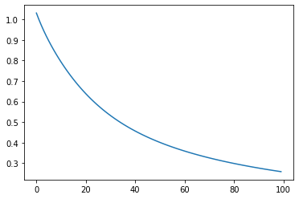

# Imports
import math
import torch
import numpy as np
import pandas as pd
import matplotlib.pyplot as pltMulti Perceptron Layer
Task 1: Creating the single layer perceptron (3 points)
In this lab we will focus on the perceptron, and how it can be used to model logic gates. Further, this same idea can be extended further due to perceptrons being a universal function approximator
Implement the sigmoid function (1 point)
\(ùëÜ(x) = \frac{1}{1 + e^{-x}}\)
def sigmoid(x):
'''
Applies the sigmoid function to the given input
Parameters
----------
x: torch.Tensor
Input array/tensor
Returns
-------
out: torch.Tensor
Tensor after applying sigmoid function to it
'''
return 1/(1+torch.exp(-x))# Testing sigmoid
sigmoid(torch.tensor([0.5, 0.5, 0, 1, -1, 10e8, -10e8]))tensor([0.6225, 0.6225, 0.5000, 0.7311, 0.2689, 1.0000, 0.0000])Implement the perceptron function (1 point)
\(y' = x \bullet W^t + b\)
def perceptron(inputs, weights, bias):
'''
Defines the single layer perceptron model
'''
return torch.matmul(inputs, weights.T) + bias# Input size of 1x2
inputs = torch.tensor([1., 0.])
# A weight matrix of size 2x4
weights = torch.rand((2,4))
# Biases for each output neuron, size 1x4
biases = torch.rand(4)
# Testing Perceptron
perceptron(inputs, weights.T, biases)tensor([0.7984, 0.6330, 1.4080, 1.6012])Implement the binary_cross_entropy function (1 point)
\(\mathrm{Loss} = - \frac{1}{\mathrm{N}} \sum_{i=1}^{\mathrm{N}} y_i \cdot \mathrm{log}\; {\hat{y}}_i + (1-y_i) \cdot \mathrm{log}\; (1-{\hat{y}}_i)\)
def binary_cross_entropy(preds, targets):
'''
Applies binary cross entropy given predictions and ground truth
'''
return -torch.mean( (targets*torch.log(preds)) + ((1-targets)*torch.log(1-preds)) )AND Gate
and_data = np.array([[0,0,0],
[0,1,0],
[1,0,0],
[1,1,1]])
# Creating a PyTorch tensor
and_data = torch.Tensor(and_data)# Same slicing as np arrays
X = and_data[:,:-1]
y = and_data[:,-1:]W = torch.randn((1,2), requires_grad=True)
b = torch.randn((1,1), requires_grad=True)Create the training loop (1 point)
n_epochs = 100
lr = 5e-1
losses = []
for _ in range(n_epochs):
# Define the Training Loop here
# Get predictions
output = sigmoid(perceptron(X, W, b))
# Calculate Loss
loss = binary_cross_entropy(output, y)
# Do a backward step (to calculate gradients)
loss.backward()
# Update Weights
with torch.no_grad():
W = W - lr*W.grad
b = b - lr*b.grad
W.requires_grad = True
b.requires_grad = True
# Append Loss
losses.append(loss.item())plt.plot(losses)
with torch.no_grad():
print((perceptron(X, W, b) > 0.5).int())tensor([[0],
[0],
[0],
[1]], dtype=torch.int32)OR Gate
or_data = np.array([[0,0,0],
[0,1,1],
[1,0,1],
[1,1,1]])
# Creating a PyTorch tensor
or_data = torch.Tensor(or_data)# Same slicing as np arrays
X = or_data[:,:-1]
y = or_data[:,-1:]W = torch.randn((1,2), requires_grad=True)
b = torch.randn((1,1), requires_grad=True)Reuse the training loop
n_epochs = 100
lr = 5e-1
losses = []
for _ in range(n_epochs):
# Get predictions
output = sigmoid(perceptron(X, W, b))
# Calculate Loss
loss = binary_cross_entropy(output, y)
# Do a backward step (to calculate gradients)
loss.backward()
# Update Weights
with torch.no_grad():
W = W - lr*W.grad
b = b - lr*b.grad
W.requires_grad = True
b.requires_grad = True
# Append Loss
losses.append(loss.item())plt.plot(losses)with torch.no_grad():
print((perceptron(X, W, b) > 0.5).int())tensor([[0],
[1],
[1],
[1]], dtype=torch.int32)XOR Gate
xor_data = np.array([[0,0,0],
[0,1,1],
[1,0,1],
[1,1,0]])
# Creating a PyTorch tensor
xor_data = torch.Tensor(xor_data)# Same slicing as np arrays
X = xor_data[:,:-1]
y = xor_data[:,-1:]W = torch.randn((1,2), requires_grad=True)
b = torch.randn((1,1), requires_grad=True)Reuse the training loop
n_epochs = 100
lr = 5e-1
losses = []
for _ in range(n_epochs):
# Get predictions
output = sigmoid(perceptron(X, W, b))
# Calculate Loss
loss = binary_cross_entropy(output, y)
# Do a backward step (to calculate gradients)
loss.backward()
# Update Weights
with torch.no_grad():
W = W - lr*W.grad
b = b - lr*b.grad
W.requires_grad = True
b.requires_grad = True
# Append Loss
losses.append(loss.item())plt.plot(losses)with torch.no_grad():
print((perceptron(X, W, b) > 0.5).int())tensor([[0],
[0],
[0],
[0]], dtype=torch.int32)Need for MLP
As seen above, we are unable to model the XOR gate using a single layer perceptron, so we need to add a hidden layer.
W1 = torch.randn((10,2), requires_grad=True)
W2 = torch.randn((1,10), requires_grad=True)
b1 = torch.randn((1,10), requires_grad=True)
b2 = torch.randn((1,1), requires_grad=True)Implement the mlp function (1 point)
def mlp(inputs, W1, W2, b1, b2):
'''
Defines the multi-layer perceptron model
Note: Only 1 hidden layer
'''
output = sigmoid(perceptron(inputs, W1, b1))
output = sigmoid(perceptron(output, W2, b2))
return outputdef weights_update(weights_list, bias_list):
# Update Weights
updated_w = []
updated_b = []
for w,b in zip(weights_list, bias_list):
with torch.no_grad():
w = w - lr*w.grad
b = b - lr*b.grad
w.requires_grad = True
b.requires_grad = True
updated_w.append(w)
updated_b.append(b)
return updated_w, updated_bReuse the training loop
NOTE: It will require slight modification due to the hidden layer
n_epochs = 1000
lr = 5e-1
losses = []
for _ in range(n_epochs):
# Get predictions
output = mlp(X, W1, W2, b1, b2)
# Calculate Loss
loss = binary_cross_entropy(output, y)
# Do a backward step (to calculate gradients)
loss.backward()
# Update Weights
(W1,W2),(b1,b2) = weights_update([W1,W2], [b1,b2])
# Append Loss
losses.append(loss.item())plt.plot(losses)with torch.no_grad():
print((mlp(X, W1, W2, b1, b2) > 0.5).int())tensor([[0],
[1],
[1],
[0]], dtype=torch.int32)